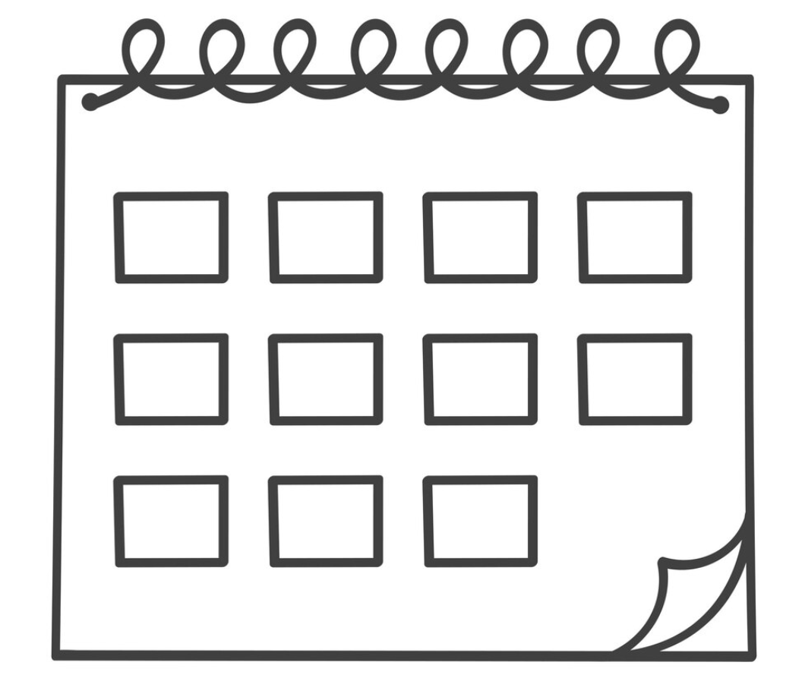
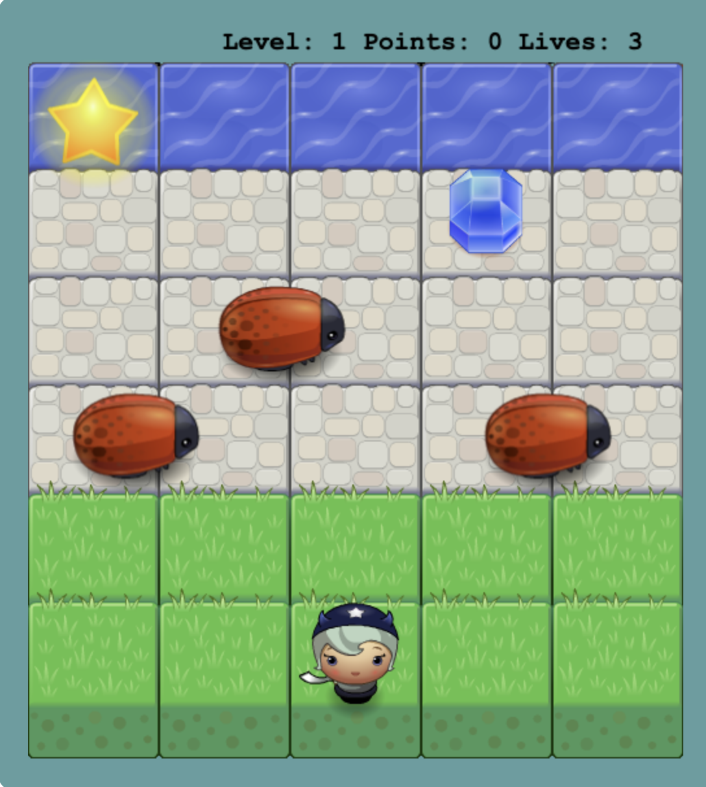

Welcome to Harper's Programming Corner! Boop! Build some stuff and mess around! pbbbft!
Explore More!
Text Entry
Type something and see it added below:
Change Background Color
Enter a hex color code (e.g., #ff5733) to change the background:
Not sure about hex codes? Try this Hex Color Picker.
YouTube Videos
Watch helpful videos to learn more about programming concepts and get inspired!
Random Dog Pictures
Volcanoes of the World Map
Click on the markers to learn more about volcanoes from around the world!
Today in History
Loading...
Bug Run Game
Test your timing and strategy in Bug Run, a game inspired by the classic Frogger. Cross obstacles to reach your goal!

Play Bug Run